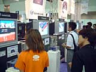
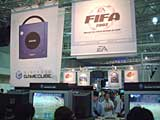
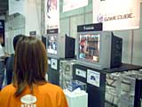
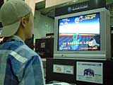
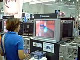
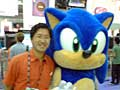

| #6 あの話題作も出展中！ ニンテンドーゲームキューブ・ライセンシーソフト |
あの話題作も出展中！ ニンテンドーゲームキューブ・ライセンシーソフト page1 ・・・ page2 |
| ● ＳＳＸ ＴＲＩＣＫＹ（仮称） エレクトロニック・アーツ・スクウェア |
|
 スノーボードの圧倒的なスピード感と、多彩なトリックが楽しめるアクションゲームです。プレイを重ねるごとにキャラクターのスピード、テクニックがどんどん上達していく様は、まるで本当に雪山でスノーボードの練習をしているみたい。転んでも痛くないのは嬉しいなぁ。 体験コーナーを後ろから眺めていると、ただ黙々とコースを進む人や、派手なトリックを決めようとして転びまくっている人がいて面白かったです。いろんな遊び方が楽しめそうなゲームですね。 |
| ● FIFA2002 Road to FIFA WORLD CUP エレクトロニック・アーツ・スクウェア |
|
 いよいよ来年に迫った日韓共催で行われる2002年FIFAワールドカップ韓国・日本が、一足早くニンテンドーゲームキューブで楽しめます。各国のスタープレイヤーが実名で登場、華麗なテクニックを披露……、してくれるかどうかは遊ぶ人しだいですが、来年まで待てないサッカーファンにはおすすめ。実況や芝の質感のリアルさが印象的でした。とりあえず、頑張れニッポン！ |
| ● ユニバーサルスタジオ・ジャパン ケムコ |
|
 今年大阪に誕生したばかりのテーマパーク、ユニバーサルスタジオ・ジャパンを舞台にしたゲームです。リアルに再現されたパーク内を、あのウッドペッカーが案内してくれますよ。いろんなイベントが用意されていて、実際に行った人はもちろん、まだ行ったことない人も楽しめるそうです。お目当てのアトラクションを効率良く回るために、このゲームで予習していくといいかもしれませんね。 体験コーナーでバック・トゥ・ザ・フューチャーのアトラクションを楽しそうにプレイしているのを見ると、思わず本物を体験したくなっちゃいました。 |
| ● SUPER MONKEY BALL セガ |
|
 ロールプレイングならぬボールプレイング!? という耳慣れぬジャンルのこのゲームは、おサルさん達がボールに入ってコロコロ転がりながら、憧れのバナナアイランドを目指すというパーティゲームです。レースやボクシング、ボーリングにビリヤードと、みんなでワイワイ騒ぎながら楽しめるゲームがいっぱい入ってますよ。アーケードで人気のゲームだから、知ってる人もいるんじゃないかな。 体験コーナーではレースステージやボーリングステージなど、数ステージが用意されていて、対戦プレイも可能です。さらに、かわいいおサルさんの着ぐるみがいましたが、これがまた大人気で、写真撮影をねだる人続出！ 明日からは、こんな微笑ましい光景がもっとたくさん見られるのでしょうね。 |
| ● ソニック アドベンチャー ２（仮称） セガ |
|
 世界中で人気のソニック・ザ・ヘッジホッグが、ついにニンテンドーゲームキューブにやってきます。走る、転がる、飛び回る！ ハイスペックマシンとハイスピードアクションの組み合わせで、爽快感200％アップってトコですね。ヒーローとダーク、それぞれ3人のキャラクターがいて、ストーリーも善悪2通りあるそうです。 シューティングや宝探し、それに育成といった新要素も加わるということで、体験コーナーは期待を寄せる関係者でいっぱいでした。今のところ遊べるのはほんの一部だけのようですが、それでも、その圧倒的なスピード感に、プレイしている人は皆一様に驚いた表情を浮かべてましたよ。  ソニックくんと並んで笑顔の中社長。お客様の反応も上々で、手応えバッチリ、ってところでしょうか。 |
あの話題作も出展中！ ニンテンドーゲームキューブ・ライセンシーソフト page1 ・・・ page2 |
| 前のレポートへ | 次のレポートへ |
|
|